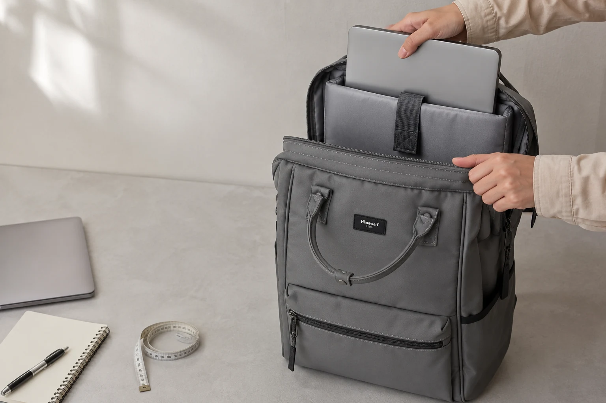
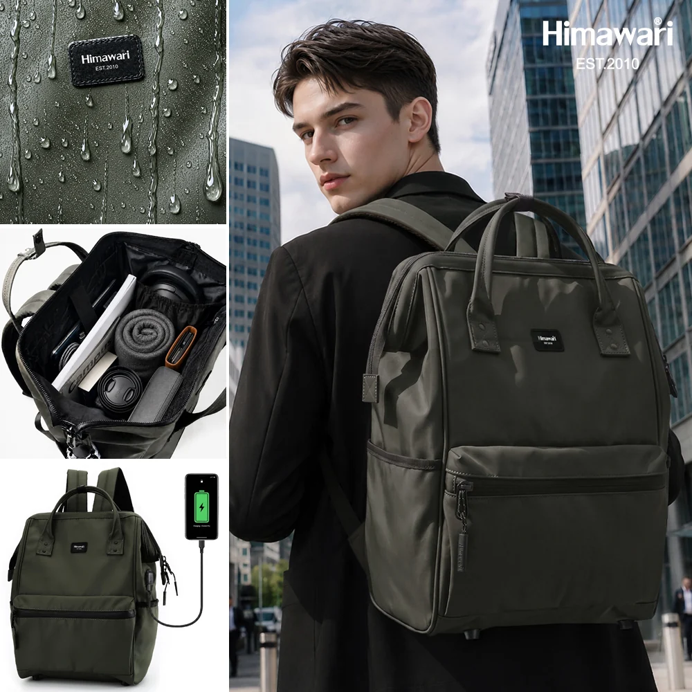

노트북 백팩은 본체와 입구를 함께 재기

노트북 백팩을 볼 때 화면 인치가 눈에 먼저 들어옵니다. 하지만 화면 크기만으로 기기 전체의 가로와 세로, 두께를 알 수는 없습니다. 케이스를 사용하는 사람에게는 케이스를 포함한 외형이 실제 운반할 크기입니다. 가방 안쪽의 너비가 충분해 보여도 입구에서 모서리가 걸리면 넣는 동작이 달라집니다. 구매 전에는 기기의 치수와 가방의 내부 정보, 실제 들어가는 경로를 함께 확인하는 것이 필요합니다.
기기 정보는 제조사 사양에서 본체 크기를 찾거나 직접 재어 기록합니다. 늘 같은 케이스를 쓴다면 케이스를 씌운 상태의 폭과 높이, 두께를 따로 남깁니다. 모서리나 지퍼 손잡이가 튀어나온 부분도 실제 외형에 포함됩니다. 충전기와 마우스의 부피를 노트북 치수에 섞지 않고 각각 다른 물건으로 적어두세요. 판매자에게 문의할 때 기기 이름과 인치만 말하는 것보다 이 정보를 함께 전하면 확인할 조건이 분명해집니다.
안쪽 크기와 입구 크기
가방의 전체 치수와 기기 수납 공간의 치수는 다른 정보입니다. 외부 크기에서 내부 여유를 계산하기보다 제품이 제공하는 내부 정보를 확인합니다. 정보가 없으면 수납칸의 안쪽 폭과 깊이, 입구를 문의할 수 있습니다. 기기를 넣는 방향에 따라 필요한 여유도 달라질 수 있으므로 실제로 어느 면이 먼저 들어가는지 사진이나 설명에서 살펴보세요. 비슷한 모델의 정보를 지금 고른 제품에 그대로 적용하지 않는 것도 중요합니다.
입구는 지퍼가 어느 범위까지 열리는지와 좁아지는 면이 있는지를 봅니다. 손잡이나 덮개가 있는 경우에는 기기를 넣을 때 어떤 위치에 놓이는지도 확인할 수 있습니다. 내부가 넓다는 설명만으로 이 경로를 알 수 없다면 판매자에게 기기와 케이스의 외형을 전달하고 문의하세요. 기기를 비스듬히 돌려 넣어야 하는 방식이 자신의 사용에 편한지, 매일 반복할 동작으로 받아들일 수 있는지도 구매 조건이 됩니다.
예를 들어 기기 본체는 들어가지만 케이스를 포함하면 입구를 지나기 어려운 조건을 생각해볼 수 있습니다. 케이스를 매번 벗길 계획인지, 그대로 운반할 계획인지에 따라 후보를 남기는 기준이 달라집니다. 판매자가 확인한 조건도 어느 상태를 기준으로 한 답변인지 알아두는 편이 좋습니다. 본체만 넣은 정보와 케이스까지 포함한 정보가 섞이지 않아야 실제 사용에서 다시 판단할 부분이 줄어듭니다.
Himawari No.1884 제품 정보의 이 제품은 외부 크기가 가로 30 × 세로 45 × 폭 20cm입니다. 이 숫자는 제품의 겉 크기이며 기기 수납칸의 치수로 읽지 않습니다. 후보로 검토한다면 자신의 케이스 포함 치수를 남기고, 해당 제품에서 내부와 입구에 관해 확인할 정보가 무엇인지 대조합니다. 기기와 함께 운반할 파일과 충전 도구까지 추가한 조건에서 어떻게 배치되는지도 따로 살펴볼 수 있습니다.

기기가 놓인 뒤의 주변 물건
수납 구조가 실제로 나뉘어 있다면 기기를 넣은 뒤 다른 짐이 어디에 닿는지 봅니다. 별도 슬리브나 밴드가 있는 경우 안내된 방식으로 사용할 수 있는지, 닫을 때 기기나 케이스를 강하게 누르는 부분이 없는지 확인합니다. 분리된 공간이 있다는 사실과 충격 보호 성능은 구분할 정보입니다. 제품이 설명하는 보호 조건이 있다면 그 범위를 읽고, 사진에서 보이는 구조만으로 성능을 덧붙여 판단하지 않습니다.
가방 바닥과 기기가 만나는 위치도 실제 구조에서 볼 수 있습니다. 기기 공간의 끝이 어느 위치에 있는지, 가방을 내려놓을 때 어떤 부위가 닿는지는 내부 사진과 제품 안내로 확인할 부분입니다. 바닥에서 일정 거리 떨어져 보인다는 이유로 모든 충격이 막힌다고 정하지 않습니다. 들고 다니는 방식과 내려놓는 동작에서 무엇을 확인해야 할지 생각하면, 내부 구조에 관한 질문과 사용 방식에 관한 질문을 구분할 수 있습니다.
충전기와 마우스, 파일을 함께 넣은 상태에서는 노트북을 꺼낼 동작이 다시 달라질 수 있습니다. 기기만 담았을 때 자연스럽게 닫히던 여밈이 다른 물건을 더하면 눌리는지 봅니다. 파우치를 먼저 빼야 기기를 꺼낼 수 있는 경우라면 그 순서가 실제 업무에서 편한지 판단하세요. 자주 꺼내는 기기는 한 번의 동작으로 찾고 싶을 수 있고, 이동 중 쓰지 않는 기기는 별도의 묶음으로 두는 구성이 맞을 수도 있습니다.
판매자에게 남길 구체적인 질문
온라인 정보가 부족할 때에는 기기 모델과 케이스 유무, 실제 치수를 먼저 적고 확인하려는 지점을 묻습니다. 기기가 들어가는지라는 넓은 질문만 남기기보다 입구 통과와 내부 닫힘, 다른 짐과의 배치 중 무엇이 궁금한지 구분합니다. 판매자가 제시하는 확인 자료가 실제 같은 제품과 조건인지도 대조하세요. 직접 넣어본 기록이 있다면 어떤 케이스와 상태인지 알아둘 수 있고, 정보가 없는 부분은 확인되지 않은 조건으로 남습니다.
직접 확인할 수 있는 경우에는 허용된 범위에서 자신의 기기나 같은 외형의 물건을 대조합니다. 넣고 꺼내는 동작뿐 아니라 여밈이 자연스럽게 닫히는지와 다른 짐을 함께 담았을 때도 같은지 봅니다. 제품을 손상시키거나 강하게 누르는 방식으로 시험할 필요는 없습니다. 실제 판매 조건과 확인 방법을 미리 읽고, 구매 뒤의 교환이나 상담에 관한 안내도 현재 조건에서 확인해두면 선택할 때 필요한 범위가 분명해집니다.
기기를 바꾸거나 케이스를 새로 쓰는 날에는 기존 백팩의 조건도 다시 대조합니다. 같은 화면 인치라도 실제 외형이 달라질 수 있으므로 예전의 수납 결과를 그대로 옮겨 생각하지 않습니다. 현재 가방에서 무엇이 불편했는지 입구와 내부 배치, 꺼내는 순서로 나누어 남기면 새 후보에 물을 질문이 구체적으로 됩니다. 기기의 치수를 알고 가방의 정보를 구분해 읽으면 제품 이름보다 실제 사용에 필요한 조건으로 선택할 수 있습니다.